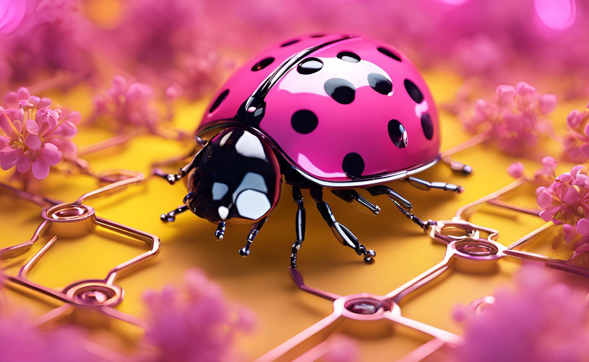

Sobre mí
Bienvenido a mi Blog de Noticias. Me llamo Jésica y mi apodo es Ladybird, por eso tengo esta imagen 😊. Amo la lectura y escribir tanto en inglés como en español. Actualmente, estoy completamente fascinada por el mundo de la tecnología y puedo pasar horas frente a la computadora explorando nuevas ideas y tendencias. También me encantan los colores y disfruto haciendo collages de imágenes usando Canva. ¡Espero que encuentres aquí contenido que te inspire y entretenga!